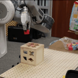

I am a third-year computer science and pure mathematics undergraduate at University of California, Berkeley. I am currently working with Professor Pieter Abbeel as a researcher in Berkeley Artificial Intelligence Research (BAIR) Lab.
I am interested in reinforcement learning methods and their applications on real robotics tasks.
|

|
Asynchronous Methods for Model-based Reinforcement Learning
Yunzhi Zhang*, Ignasi Clavera*, Boren Tsai, Pieter Abbeel [arXiv] [Webpage] [Code] CoRL, 2019 (Spotlight). NeurIPS Deep RL Workshop, 2019. Autonomous skill acquisition of robotics requires time and data-efficient methods due to the non-negligible cost of data collection. We proposed an asynchronous framework which improves time and sample efficiency, and further encourages exploration and reduces policy overfitting. |
I am a student instructor for CS170: Efficient Algorithms and Intractable Problems and CS70: Discrete Mathematics and Probability Theory. Here are some notes I wrote for this and other classes.
Check my art work here.